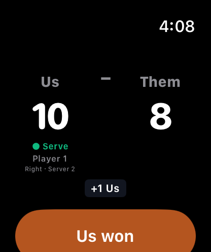

Apple Watch
Keep score from your wrist
Start a match on your iPhone and the Apple Watch app shows the same team names — “Us” and “Them” unless you pick your own — with the live score and who is serving. Tap or swipe up on a side to give it the rally, swipe down to undo. Built for casual games where nobody wants to walk to the phone between points. It is a remote for the match on your phone, not a separate scorer.
